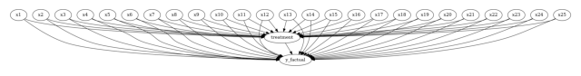
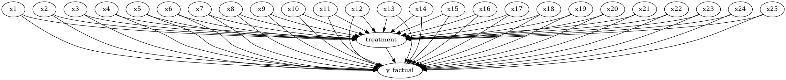

DoWhy example on ihdp (Infant Health and Development Program) dataset#
[1]:
# importing required libraries
import dowhy
from dowhy import CausalModel
import pandas as pd
import numpy as np
Loading Data#
[2]:
data= pd.read_csv("https://raw.githubusercontent.com/AMLab-Amsterdam/CEVAE/master/datasets/IHDP/csv/ihdp_npci_1.csv", header = None)
col = ["treatment", "y_factual", "y_cfactual", "mu0", "mu1" ,]
for i in range(1,26):
col.append("x"+str(i))
data.columns = col
data = data.astype({"treatment":'bool'}, copy=False)
data.head()
[2]:
| treatment | y_factual | y_cfactual | mu0 | mu1 | x1 | x2 | x3 | x4 | x5 | ... | x16 | x17 | x18 | x19 | x20 | x21 | x22 | x23 | x24 | x25 | |
|---|---|---|---|---|---|---|---|---|---|---|---|---|---|---|---|---|---|---|---|---|---|
| 0 | True | 5.599916 | 4.318780 | 3.268256 | 6.854457 | -0.528603 | -0.343455 | 1.128554 | 0.161703 | -0.316603 | ... | 1 | 1 | 1 | 1 | 0 | 0 | 0 | 0 | 0 | 0 |
| 1 | False | 6.875856 | 7.856495 | 6.636059 | 7.562718 | -1.736945 | -1.802002 | 0.383828 | 2.244320 | -0.629189 | ... | 1 | 1 | 1 | 1 | 0 | 0 | 0 | 0 | 0 | 0 |
| 2 | False | 2.996273 | 6.633952 | 1.570536 | 6.121617 | -0.807451 | -0.202946 | -0.360898 | -0.879606 | 0.808706 | ... | 1 | 0 | 1 | 1 | 0 | 0 | 0 | 0 | 0 | 0 |
| 3 | False | 1.366206 | 5.697239 | 1.244738 | 5.889125 | 0.390083 | 0.596582 | -1.850350 | -0.879606 | -0.004017 | ... | 1 | 0 | 1 | 1 | 0 | 0 | 0 | 0 | 0 | 0 |
| 4 | False | 1.963538 | 6.202582 | 1.685048 | 6.191994 | -1.045229 | -0.602710 | 0.011465 | 0.161703 | 0.683672 | ... | 1 | 1 | 1 | 1 | 0 | 0 | 0 | 0 | 0 | 0 |
5 rows × 30 columns
1.Model#
[3]:
# Create a causal model from the data and given common causes.
model=CausalModel(
data = data,
treatment='treatment',
outcome='y_factual',
common_causes=["x"+str(i) for i in range(1,26)]
)
model.view_model()
from IPython.display import Image, display
display(Image(filename="causal_model.png"))


2.Identify#
[4]:
#Identify the causal effect
identified_estimand = model.identify_effect(proceed_when_unidentifiable=True, method_name="maximal-adjustment")
print(identified_estimand)
Estimand type: EstimandType.NONPARAMETRIC_ATE
### Estimand : 1
Estimand name: backdoor
Estimand expression:
d ↪
────────────(E[y_factual|x1,x16,x11,x22,x21,x6,x2,x17,x15,x18,x25,x5,x12,x20,x ↪
d[treatment] ↪
↪
↪ 24,x7,x3,x4,x23,x13,x19,x8,x10,x14,x9])
↪
Estimand assumption 1, Unconfoundedness: If U→{treatment} and U→y_factual then P(y_factual|treatment,x1,x16,x11,x22,x21,x6,x2,x17,x15,x18,x25,x5,x12,x20,x24,x7,x3,x4,x23,x13,x19,x8,x10,x14,x9,U) = P(y_factual|treatment,x1,x16,x11,x22,x21,x6,x2,x17,x15,x18,x25,x5,x12,x20,x24,x7,x3,x4,x23,x13,x19,x8,x10,x14,x9)
### Estimand : 2
Estimand name: iv
No such variable(s) found!
### Estimand : 3
Estimand name: frontdoor
No such variable(s) found!
3. Estimate (using different methods)#
3.1 Using Linear Regression#
[5]:
# Estimate the causal effect and compare it with Average Treatment Effect
estimate = model.estimate_effect(identified_estimand,
method_name="backdoor.linear_regression", test_significance=True
)
print(estimate)
print("Causal Estimate is " + str(estimate.value))
data_1 = data[data["treatment"]==1]
data_0 = data[data["treatment"]==0]
print("ATE", np.mean(data_1["y_factual"])- np.mean(data_0["y_factual"]))
*** Causal Estimate ***
## Identified estimand
Estimand type: EstimandType.NONPARAMETRIC_ATE
### Estimand : 1
Estimand name: backdoor
Estimand expression:
d ↪
────────────(E[y_factual|x1,x16,x11,x22,x21,x6,x2,x17,x15,x18,x25,x5,x12,x20,x ↪
d[treatment] ↪
↪
↪ 24,x7,x3,x4,x23,x13,x19,x8,x10,x14,x9])
↪
Estimand assumption 1, Unconfoundedness: If U→{treatment} and U→y_factual then P(y_factual|treatment,x1,x16,x11,x22,x21,x6,x2,x17,x15,x18,x25,x5,x12,x20,x24,x7,x3,x4,x23,x13,x19,x8,x10,x14,x9,U) = P(y_factual|treatment,x1,x16,x11,x22,x21,x6,x2,x17,x15,x18,x25,x5,x12,x20,x24,x7,x3,x4,x23,x13,x19,x8,x10,x14,x9)
## Realized estimand
b: y_factual~treatment+x1+x16+x11+x22+x21+x6+x2+x17+x15+x18+x25+x5+x12+x20+x24+x7+x3+x4+x23+x13+x19+x8+x10+x14+x9
Target units: ate
## Estimate
Mean value: 3.9286717508727182
p-value: [1.58915682e-156]
Causal Estimate is 3.9286717508727182
ATE 4.021121012430829
3.2 Using Propensity Score Matching#
[6]:
estimate = model.estimate_effect(identified_estimand,
method_name="backdoor.propensity_score_matching"
)
print("Causal Estimate is " + str(estimate.value))
print("ATE", np.mean(data_1["y_factual"])- np.mean(data_0["y_factual"]))
Causal Estimate is 3.9791388232170393
ATE 4.021121012430829
3.3 Using Propensity Score Stratification#
[7]:
estimate = model.estimate_effect(identified_estimand,
method_name="backdoor.propensity_score_stratification", method_params={'num_strata':50, 'clipping_threshold':5}
)
print("Causal Estimate is " + str(estimate.value))
print("ATE", np.mean(data_1["y_factual"])- np.mean(data_0["y_factual"]))
Causal Estimate is 3.4550471588628207
ATE 4.021121012430829
3.4 Using Propensity Score Weighting#
[8]:
estimate = model.estimate_effect(identified_estimand,
method_name="backdoor.propensity_score_weighting"
)
print("Causal Estimate is " + str(estimate.value))
print("ATE", np.mean(data_1["y_factual"])- np.mean(data_0["y_factual"]))
Causal Estimate is 4.028748218389916
ATE 4.021121012430829
4. Refute#
[9]:
refute_results=model.refute_estimate(identified_estimand, estimate,
method_name="random_common_cause")
print(refute_results)
Refute: Add a random common cause
Estimated effect:4.028748218389916
New effect:4.028748218389915
p value:1.0
[10]:
res_placebo=model.refute_estimate(identified_estimand, estimate,
method_name="placebo_treatment_refuter", placebo_type="permute")
print(res_placebo)
Refute: Use a Placebo Treatment
Estimated effect:4.028748218389916
New effect:-0.48333184869507456
p value:0.0
4.3 Data Subset Refuter#
[11]:
res_subset=model.refute_estimate(identified_estimand, estimate,
method_name="data_subset_refuter", subset_fraction=0.9)
print(res_subset)
Refute: Use a subset of data
Estimated effect:4.028748218389916
New effect:4.021560646436047
p value:0.88